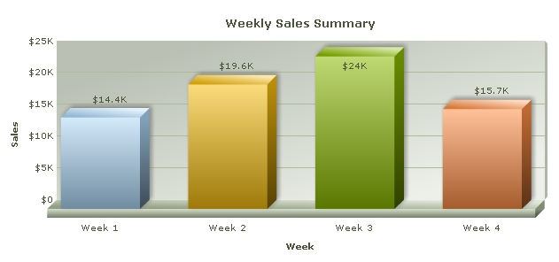

| Resizing Charts in Percentage |
You can set percent values for chart width and height instead of absolute pixel values. The chart will automatically adjust its dimension with respect to the parent container element. Let us see how this is done in HTML. |
<div id="chartContainer" style="width:800px; height:300px;">
This text is replaced by the chart
</div>
<script type="text/javascript"><!--
var myChart = new FusionCharts("Column3D.swf", "myChartId", "80%", "100%", "0", "1");
myChart.setXMLUrl("Data.xml");
myChart.render("chartContainer");
// --></script>
See it live! In the above code, we have specified the width of the chart to be 80% and height -100%. The DIV with id - "chartContainer" is the container element of the chart. Hence, its width and height will be derived in percentage from the DIV's dimension. In the example above, we have set the width of the DIV to 800 pixels and the height to 300 pixels. As such, the chart's size will automatically be 640x300. The chart will look like the image below:  |
| Dynamic resize feature of charts |
|
FusionCharts XT can dynamically resize itself when the parent container resizes. For this you will need to :
Whenever the container element resizes, the chart will also dynamically resize itself instantly. In the example below, we have created a very basic sample where the chart will fill up the whole of web browser's space and if the browser's size is changed or adjusted, the chart will resize itself accordingly. Note the width and height declared for BODY and DIV elements using CSS. |
<html>
<head>
<title>My First chart using FusionCharts XT
- Using dynamically resizable chart</title>
<script type="text/javascript" src="FusionCharts/FusionCharts.js"></script>
</head>
<body style="height:100%;">
<div id="chartContainer" style="height:100%;" >
FusionCharts XT will load here
</div>
<script type="text/javascript"><!--
var myChart = new FusionCharts("FusionCharts/Area2D.swf", "myChartId", "100%", "100%", "0", "1");
myChart.setXMLUrl("LargeData.xml");
myChart.render("chartContainer");
// --></script>
</body>
</html>
See it live! |
|
In the above code we have:
|